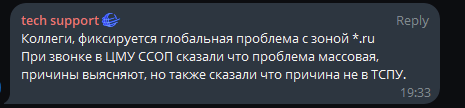

Началось в 18:30. Системы мониторинга StatusCake начали присылать уведомления одним за другим.
Проверка через ping-admin показывает что из РФ в РФ так же наблюдаются проблемы.
ICMP ходит без проблем, а вот домены через раз резолвятся.
{kind=link}
UPD:

Отключение DNSSEC тоже не помогает
{kind=link}
UDP2: Начало оживать
хехе впн и ничего не заметил
Ну если все RU-домены, к которым Вы обращались, успешно закэшировались DNS-сервером Вашего VPN - то возможно. Или если этот DNS-сервер хитро настроен глобально забивать на DNSSEC (но это само по себе так себе идея).
А так и через 1.1.1.1, и через 8.8.8.8, и через 9.9.9.9 ресолвинг не работает. И через свои DNS-сервера, которые форвардят запросы на любой из перечисленных, соответственно, тоже.
с российского ip одни сайты норм (2гис) другие нет (ya)
dns 1111 1001
И не поможет, из-за Max Sig Life, который в лучшем случае часы. 1800 для зоны .com, например
Кстати, Max Sig Life в зоне .ru — 345600, так что отключайте дней за пять перед тем, как что-то куда-то переносить
Вообще, не припомню, чтобы слетал DNSSEC всей зоны когда-нибудь. Похоже, кто-то бросил валенок на клавиатуру
77.88.8.8 днс от яндекса пока используйте, решает проблему. как починят, поменяете 
Или уснули
Например, 192.168.104.1😄
Яндексовский DNS тоже через раз ошибки выдаёт…
А что 192.168.104.1? Он куда запросы перенаправляет-то? Речь же не про DNSSEC между клиентом и его собственным DNS-сервером, а между этим DNS-сервером и вышестоящим и далее по цепочке.
В unbound
domain-insecure: ru.
работает отлично
Я это у себя пробовал и не работало. Я так понимаю, что дабы это заработало, надо, чтобы вышестоящий сервер хоть какой-то ответ отдавал, пусть с невалидной подписью. А если он отдаёт SERVFAIL - то никакие настройки на своей стороне не помогут. Возможно, если вместе с яндексовскими / НСДИ серверами это применить… но, честно говоря, устал уже пробовать разные настройки и потом flush’ить кэши везде для проверки. Пусть чинят, жду.
о ya заработал. mail всё ещё нет
Вы unbound используете как форвардер к гуглу и пр.? Тогда конечно работать не будет 
Split DNS для своих доменов, остальное форвардилось на Quad9. Как бы до сего момента этого было более чем достаточно для всех нужд.
P.S. Отключил форвардинг, заработало (ожидаемо). Но я ж взращен на рекомендациях “не дёргай корневые серверы всуе”  , надо потом обратно вернуть, наверное…
, надо потом обратно вернуть, наверное…
вот и mail заработал. чинят
195.208.4.1, 195.208.5.1 - Рекурсивные сервера национальной системы доменных имён (НСДИ), пишут, что на них исправили проблему (в пределах НСДИ).
Они просто отключили проверку подписей)
ЦМУ ССОП как раз таки и просит его отключить
ЦМУ ССОП как раз таки и просит его отключить
Мошенники, фишеры и мамкины кулхацкеры рады такому решению.
вчера с 7 до 10 вечера инет вообще не работал!входящий трафик не шёл
ну это скорее какие-то ваши локальные проблемы
в таких случаях надо делать диагностику по узлам связи
После вчера сегодня рутрекер доступен без впн.
Периодически включают доступ на разные трекеры. Видимо наблюдают за скачиваемым контентом…